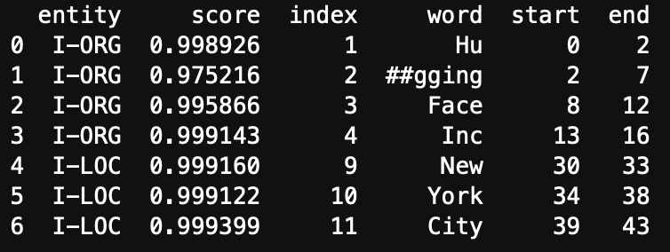
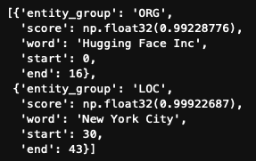
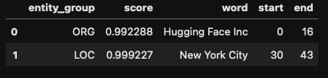
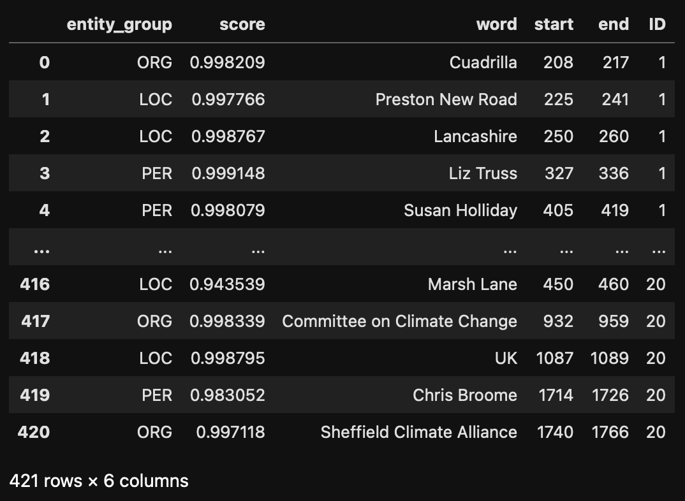

ner_pipeline = pipeline("ner", model="dbmdz/bert-large-cased-finetuned-conll03-english", aggregation_strategy="simple")Named Entity Recognition
Session 3: Named Entity Recognition
In an age where digital news outlets produce a constant stream of information, extracting meaningful insights from this vast amount of text has become essential for organizations, researchers, and individuals. Named Entity Recognition (NER), a foundational technique in natural language processing (NLP), offers an effective way to analyze, structure, and understand unstructured news data by identifying and classifying named entities in text, such as people, locations, organizations, dates, and more.
NER is particularly valuable in the context of news data because it enables the extraction of actionable insights from articles that span diverse topics and narratives. By identifying and categorizing entities, NER facilitates tasks such as trend analysis, information retrieval, and sentiment analysis, allowing users to make sense of complex and dynamic news landscapes.
For instance, let’s look at the sample text below. There are multiple elements of interest in this text, they are highlighted, they represent the types of terms that can be automatically extracted from the text.
Sample text
In the small town of Greenfield, located near the Northumberland Coast, heated debates are unfolding over the construction of new wind turbines by the energy company EcoGen Ltd.. While supporters highlight the environmental benefits, a vocal group of residents argues that the project raises significant social and aesthetic concerns.
At a town hall meeting on Tuesday, Dr. Laura Simmons, an environmental scientist from Durham University, emphasized the importance of renewable energy for combating climate change. “The United Kingdom has pledged to reduce its carbon emissions by 68% by 2030 under the Paris Agreement, and wind power is a crucial part of meeting those goals,” said Simmons.
Suppose that we have a corpus of documents on a specific topic (protein transition for instance), then we could quickly see who is being talked about, who is expressing a meaning, locations and companies mentioned in context of the topic etc. We can then compute statistics on these entities to see mentions over time, frequencies etc.
The information can also be linked to the topics that come from Bertopic. We can then see who is mentioned in the context of which topic, which location is linked to which topic and so on.
Technical dimension
Named Entity Recognition is a task that boils down to classifying tokens into categories. This type of task is similar to the Part of Speech tagging that we did in the first session. In POS tagging, tokens are classified in terms of their nature (verb, noun, proper noun, adjective etc.). Here we aim to classify them into location, date, company, person etc. The specific classes depend on the model. Some mainly identify company names, other provide a broader range of entities including dates, products and so on.
For a long time, NER was based on lists of entities that were tagged by humans. Basically each token was compared to a list and the class was returned. With the advent of deep learning techniques, these lists have been used to train models to classify based on the context of the word and the manner in which it is written. This means that the models are capable of identifying entities even if they were not part of the training data. They can identify based on the context of the sentence.
Example
The Amazon river is a long river.
Amazon is selling a lot of products during the holidays
Based on the context of these sentences, the model will be able to differentiate between Amazon the company and Amazon the river, classifying the first as a location, the second as a company.
As you can imagine, the performance of the model depends heavily on the data it was trained on. This means that both the type of data, the topic and the language are vital. A model that was trained on entities extracted from news articles on from the 1800s will not perform as well as a model trained on recent data. If we train the model on data from the US, or on a specific sector, the results might not be as good for different sectors. Always try to find a model as close to your use-case as possible. In any case try to check the data the model was trained on and how well it performs.
Implementation
Pipelines
There a many different models to perform NER and more will come out in the future. The difficulty for us as analysts is that each model can have a different training background. Some will have been trained on full words, others on subtokens. This means that we need to implement a different tokeniser to ensure that the model functions correctly. In addition, the output of the model itself might be presented in a less than efficient way for our purpose. A model that has been trained on subtokens might return entities at the level of the subtoken, resulting in us having to past together parts of words. See here an example:
Suppose we have the following text: “Hugging Face Inc. is based in New York City. They were founded in 2016.” Then we would like to extract “Hugging Face Inc as an organisation. In the output below you will see that in fact that”Hugging Face Inc.” has been split into different tokens. start/end indicate the letter positions of the subtoken, the score is the confidence the model has in the classification (I-ORG for organisation, I-LOC for location).

If we want to use this information, we need to group the first four subtokens together so that we have the information we want. Luckyly for us there is an easy solution to this (but it’s important to understand how the models are trained so keep this in mind). The solution is called a pipeline. A pipeline streamlines the process of downloading the model, loading the model, tokenize the text, truncate the text, perform the NER and aggregate the subtokens into one function. The pipeline does NOT remove stopwords, clean the text, and in most cases it does not lemmatize.
A pipeline takes 2 arguments:
- The model that we will use: This means that we supply a link to a model. For our purpose this means that we supply a link to a model that we find on the hugging face website. In the lecture we discussed how to find these models. We will use “dbmdz/bert-large-cased-finetuned-conll03-english” in the tutorial. The model will only be downloaded once.
- The type of task we want to perform with the model. Some models are capable of performing different tasks. And we can use pipelines for different tasks as well. For NER, the task is written: “ner”.
- We will add an argument in the function to specify that we want full words as an output instead of subtokens: aggregation_strategy=“simple”
The full pipeline then looks like this:
The pipeline is stored in a variable that you can name as you wish. It’s this variable name we will use to call the pipeline to perform the task.
For example if we have a text object:
test_text = "Hugging Face Inc. is based in New York City. They were founded in 2016."Then we supply the text to the NER pipeline
results = ner_pipeline(test_text)
resultsresults then contains the output of the model, in list format:

All that’s left for us is to transform this into a dataframe to make it easier to work with.
results = pd.DataFrame(results)
Applying to larger datasets
The previous section shows how NER pipelines work on one piece of text. We usually want to perform this type of exercise on a larger dataset of hundreds or even thousands of texts. There a two ways to do this. A first it to create a function that takes a text performs NER and organises the results. We can the apply this function to all texts at once via the apply function. The second is by creating a loop that goes through the text, document by document and aggregates.
From a programming perspective, creating a function and applying it is more efficient. It uses less resources and should be faster. However, data is unpredictable, and running the code can still take a long time. The main issue with the apply method is that if an error occurs 30min into running the script, we don’t always know where the error occurs. When working with text we often face issues where texts are too long, too short, contain characters functions do not like. Using the apply method means that we have to run everything again, with the hypothesis that we can actually find which document is the issue. Using a loop ensures that the loop stops at the level of the document that causes the issue, you can then quickly identify what went wrong, and continue the loop from where it stopped. No time is lost recomputing. In addition, you can print out the number of the observation the loop is at to see if it’s still running and this will also give you an idea of how long computation takes. Once you know you have ironed out all the issues. You can use the apply method for the subsequent analyses.
For these reasons we will take the loop approach.
WARNING -> Document ID
We subset the data to keep only an ID for the document and the text. The ID of the document is vital, without it there is no way for you to know which entity came from which document. Connecting to years, authors, other entities will become impossible. Always check where the ID of the document is, if there is none , create one!
articles_df.to_csv("shale_gas_articles.csv", index=False)
data = articles_df[['ID','Article']]Just in case you add a step here where you remove documents for whatever reason, reindex the dataframe.
data = data.reset_index(drop=True)Because we are using a loop, we will need to add the results of the NER of each document to a dataframe that will have all the results. We create an empty list in which we will store these results.
# create an empty list
all_results = []Now we create the loop:
# we want to loop over the rows
# .iterrows is a pandas method that allows us to loop over the rows
# .iterrows return the row index (i) and the data from that row (row)
for i, row in data.iterrows():
# 1. Perform NER
# we select the 'Article' column from the row
# we use it as an argument for the ner_pipeline
# the results are stored in ner_results
ner_results = ner_pipeline(row['Article'])
# the results do not have an identifier for the document
# We add it now:
for result in ner_results:
result['ID'] = row['ID'] # Add the document ID to the result
# The results of the pipeline come in a list
# we add the results to the all_results list
# were all the results are stored
all_results.extend(ner_results)
# finally we transform the final list into a df so we export it
all_results = pd.DataFrame(all_results)
all_results.to_csv("NER_results.csv", index=False)
### AnalysisThe dataframe that we have just created can be used directly for analysis. For example,
- We can check how many mentions there are per entity (barplot, wordcloud)
- Which regions are mentioned and how frequently (A map can be created)
- Which co-occurrences of mentions can we see (barplot, network)
- Which entities are mentioned the most (visualize with a wordcloud, or a barplot)
- Critical assessment of the results: what is the confidence distribution per entity type.
- Which are the companies most mentioned per region.
We can also link this information to other data in the set
- Year of publication: when did we start/stop mentioning
- Outlet, political orientation of the outlets: do specific outlets mention specific people/companies
- Classifications given by the database: link sectors to companies/people
Or link to other data you created:
- How do mentions of regions change accord to topics
- How do mentions of companies change according to technological classifications
- Which companies are most linked to central terms?
Examples based on the NER results alone
Examples of models
| Name | Description | Use Cases | Model Link |
|---|---|---|---|
| BioBERT | Pretrained on PubMed and PMC articles, specializing in biomedical text. | Gene/protein names, diseases, drugs, and more. | BioBERT |
| SciSpacy | SpaCy extension with models trained on biomedical and scientific text. | Chemicals, diseases, genes, and more. | SciSpacy |
| ClinicalBERT | Fine-tuned for clinical notes using MIMIC-III data. | Patients, procedures, medications in clinical text. | ClinicalBERT |
| Legal-BERT | Pretrained on legal documents for case laws, statutes, and contracts. | Case analysis, legal research, compliance. | Legal-BERT |
| LexNLP | NLP library for legal and regulatory text. | Extracting clauses, financial terms, legislation. | LexNLP |
| FinBERT | Fine-tuned on financial reports. | Financial terms, companies, currencies, events. | FinBERT |
| Finer | Financial-specific NER model built on BERT. | Entity extraction from financial news/reports. | Finer |
| SciBERT | Pretrained on scientific text from Semantic Scholar. | Methods, datasets, results in research papers. | SciBERT |
| MatBERT | Pretrained on materials science text. | Materials, properties, methods in material science. | MatBERT |
| ProductBERT | Fine-tuned for e-commerce platforms. | Product attributes like brand, color, size. | Custom fine-tuning required. No direct link. |
| GeoBERT | Trained on geospatial and environmental datasets. | Place names, environmental terms, climate topics. | Fine-tuned from standard models (e.g., RoBERTa). |
| Spacy-GeoNER | SpaCy pipeline for geospatial terms and place names. | Location mapping, policy documents. | GeoNER |
| TweetNER7 | Trained on social media data to identify informal entities. | Social media analysis, trend detection. | TweetNER7 |
| BERTweet | Pretrained on Twitter data for social media text understanding. | Hashtags, user mentions, and event tracking. | BERTweet |